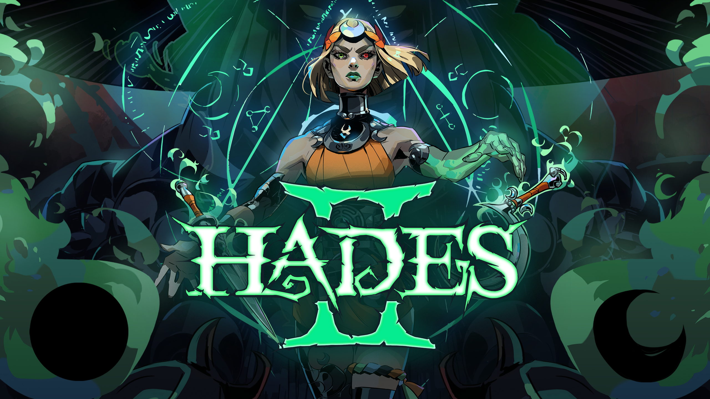
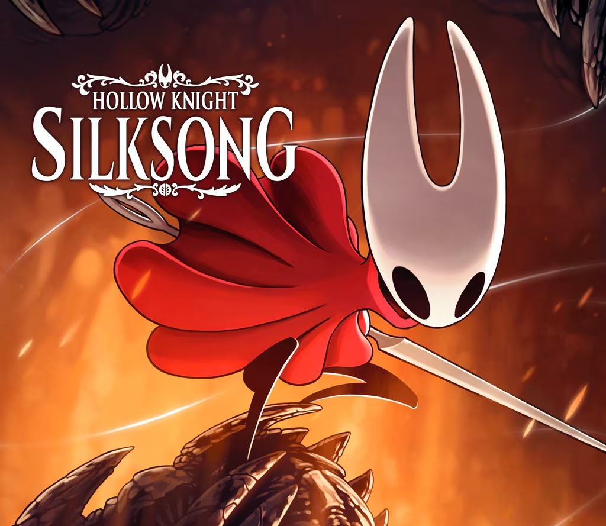
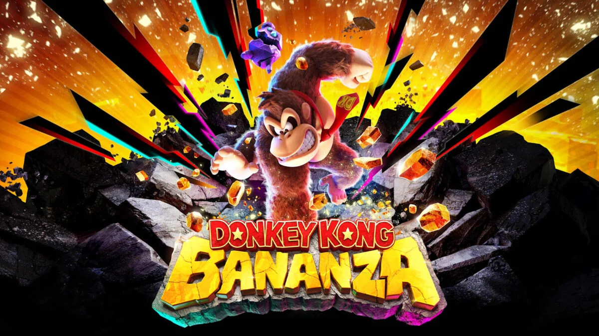

Vincitore: Clair Obscur: Expedition 33

Data di rilascio: 24 aprile 2025
Genere: Gioco di Ruolo (RPG), Strategia a turni (TBS)
Tema: Azione, Fantasy
Sviluppo: Sandfall Interactive
Pubblicazione: Kepler Interactive
Descrizione: Un progetto audace che punta forte su atmosfera e identità visiva.
Il mondo di gioco è enigmatico, surreale e ricco di simbolismo.
La narrazione promette temi maturi e un tono malinconico.
Il sistema di combattimento unisce strategia e tempismo in modo originale.
Ogni elemento sembra costruito per lasciare un’impressione duratura.
Un titolo che punta più all’impatto artistico che alla convenzione.
Altri candidati:

Hades II
Un rogue-lite frenetico e spettacolare con combattimenti rapidi e fluidi. Continua la saga degli dei dell’Olimpo, esplorando inferni sempre nuovi e sfidando nemici leggendari con stile.

Death Stranding 2: On the Beach
Un’avventura unica tra realtà e mistero, che esplora la connessione tra le persone. Combina narrativa cinematografica, ambienti evocativi e gameplay innovativo.

Hollow Knight: Silksong
Un platform metroidvania elegante e impegnativo. Esplora un mondo oscuro pieno di nemici, segreti e boss epici con agilità e precisione.

Kingdom Come: Deliverance 2
Un RPG realistico e immersivo nel Medioevo. Gestisci combattimenti, politica e sopravvivenza in un mondo aperto dettagliato e fedele alla storia.

Donkey Kong Bananza
Un platform divertente e frenetico con Donkey Kong e amici. Salta, arrampicati e raccogli banane in livelli colorati pieni di sfide e segreti.